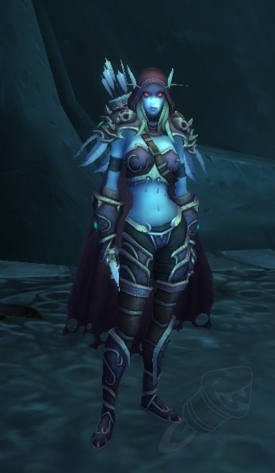

A história da expansão Wrath of the Lich King (WotLK) de World of Warcraft foca na ascensão do Lich Rei Arthas e sua ameaça ao continente de Nortúndria, onde ele busca extinguir toda a vida em Azeroth. Os jogadores da Aliança e da Horda precisam se unir para invadir a Cidadela da Coroa de Gelo e deter o reinado de terror do Lich Rei, encontrando-o em meio a terras gélidas e geladas.
Música "Lament of a Highborne"
O [ Lamento dos Altaneiros ] é um pequeno livro que contém a canção talassiana de mesmo nome. O lamento foi composto por Derek Duke e Russell Brower e cantado pela artista Vangie Gunn . Aparece na trilha sonora de Burning Crusade . O livro não tem nenhum propósito de jogabilidade, além de oferecer ao jogador a chance de reler a letra quantas vezes quiser. Os compositores revelaram que "a equipe de design de missões aprimorou uma nova linha de missão para incorporar a música como um momento de recompensa".
Acima temos fotos dos compositores da música "Lament of a the Highbourne". Derek Buke à esquerda e Russel Brower à direita.
E está é uma representação da rainha "Sylvanas Windrunner" Ingame.
Música tema do Lich King (Vilão principal da expansão)
A música tema principal para a expansão "Wrath of the Lich King" de World of Warcraft é "Wrath of the Lich King (Main Title)", de Russell Brower e Jason Hayes, que marca a narrativa e a ascensão do Lich Rei, Ner'zhul. Outras peças importantes incluem a canção "Arthas, My Son", que narra a história de Arthas Menethil e sua transformação no novo Lich Rei, e a música "The Wrath Gate", que se refere ao confronto final e à derrota do Rei.
Espero que tenham curtido essas curiosidades sobre algumas músicas do nosso amado WoWzinho. Até a próxima curiosidade.